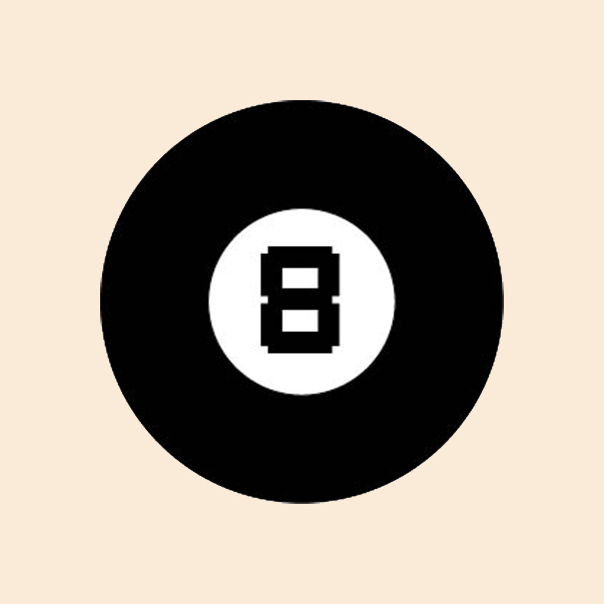
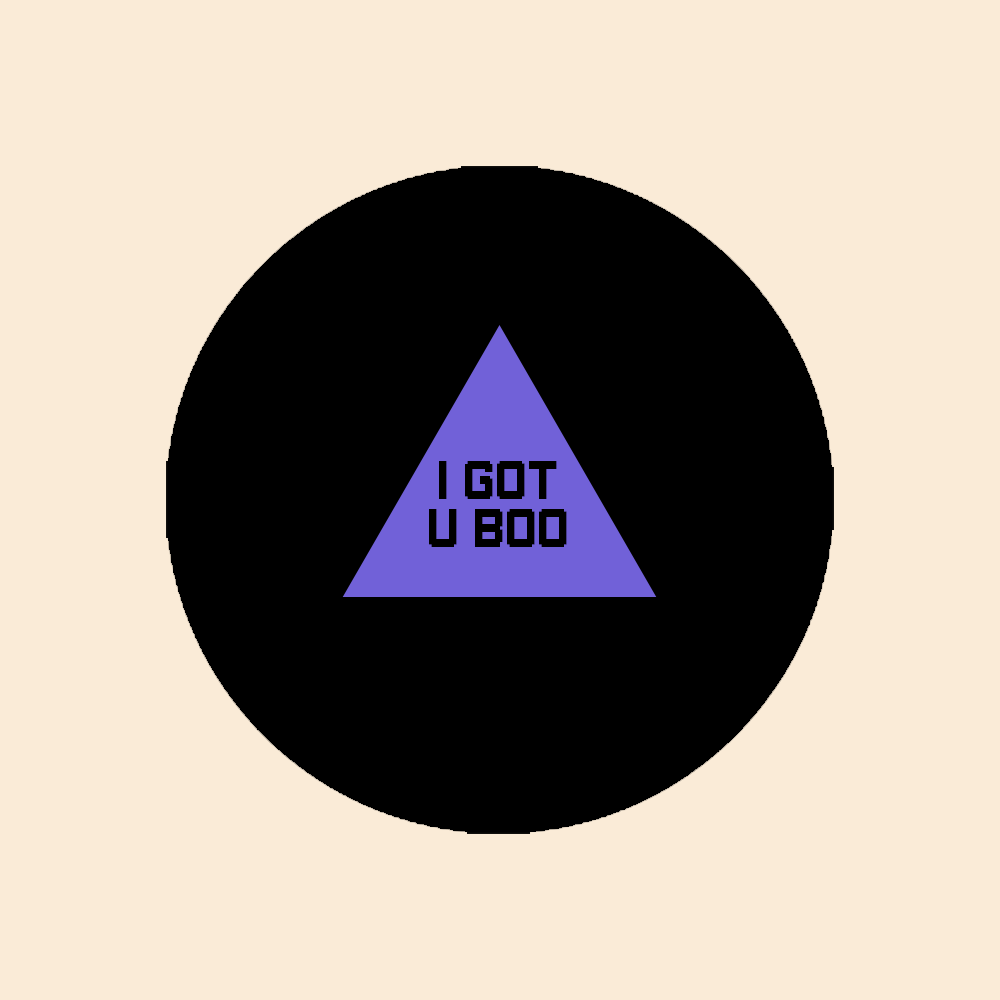

MUSIC 8 BALL
This is my sketch for my project: Music 8 Ball
ʕ •ᴥ•ʔ
This is the Music 8 Ball

Just like a Magic 8 Ball, you can ask it questions.
But this one responds with random songs on youtube! (Cool right?)
STEP 1:
Tell the 8 ball your burning questions in the form of tags

Step 2:
Shake the Music 8 Ball
( Hover to Shake)
This would be a "Click to Shake" in the final product.
Step 3:
The 8 Ball will flip over and reveal a song based on your request.

Here's a response for funsies !!
My goal with this project is to develop my skills in Web Development, since I have some knowledge in
HTML and CSS, but would like to take it further during my time in between work. With this grant, I will be
able to practice building interactive desktop art from scratch, fusing my skills in design, my love for music,
and my newfound love for coding/engineering.
Thank you for checking this out, and for giving space to noobs like me!